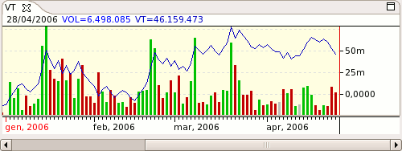

Volume Trends - VT

Parameters
Name: The text that identifies the indicator
Color: Indicator's color
Method: The type of VT method to use:
Negative Volume Index - NVI
On Balance Volume - OBV
Positive Volume Index - PVI
Positive Volume Trend - PVT